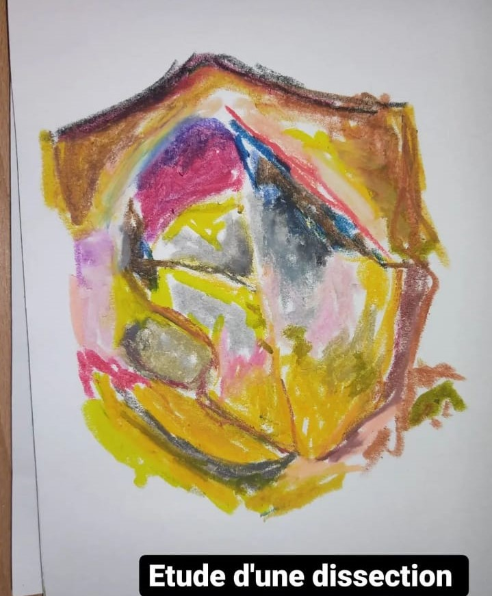
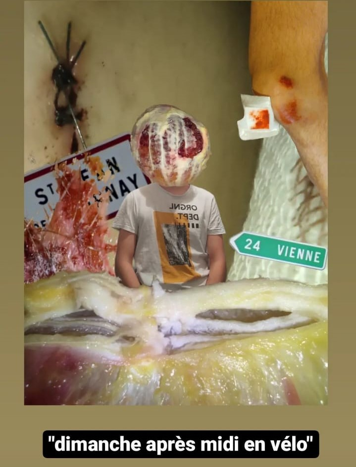
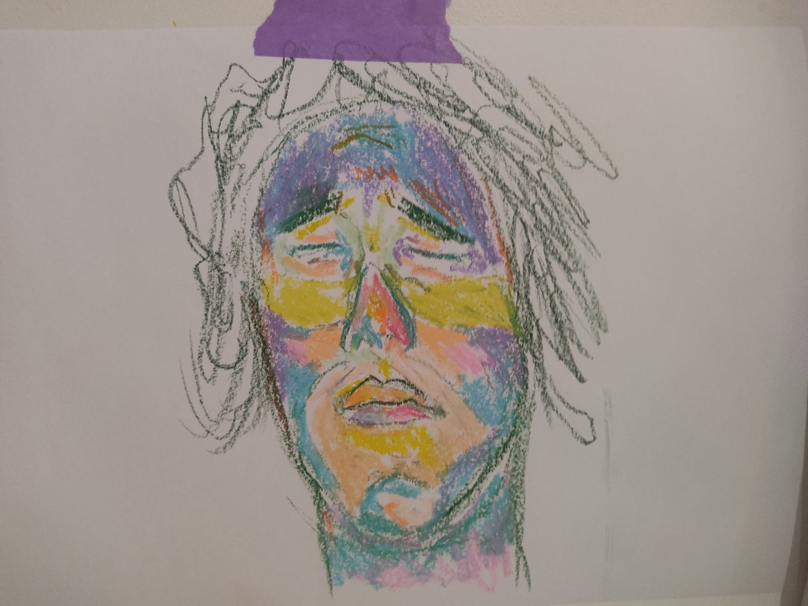

Madagascar Plus le temps passe, plus ce pays m'interesse. Je l'ai découvert à travers les origines de ma copine et petit a petit je l'integre dans mes toiles .
La mort Réelle Et plus particulièrement, la composition d'un corps humain: un corps sans peau, brulé, sans jambes . Ce n'est pas que ça me plaît tant que ça de voir ça, comme tout le monde ça me "choque" . Mais C'est justement parce que ça me choque que ce sujet m'interesse :
Nous sommes passé des chasseurs-cueilleurs qui poignardent un boeuf avant de la manger, dégoulinant de sang mais en totale indifference , à une sensibilité accrue à cela : Nous ne savons plus survivre car trop conforter dans nos innovations technologiques.

La douleur Dans une continuité de recherche autour de La Mort réelle, je m'intéresse aussi a la douleur, et les traces qu'elle laisse : les bleus, les coupures, les rougeurs ou l'émotion que la douleur fait exprimer aux visages.
Exemples de dessins au pastel que j'ai pu faire

Mes inspirations artistiques :
Paul Gauguin Cavalier sur la plage (II) 1902
Le cheval blanc 1898
Julie Botton J'ai réalisé mon stage de 3eme chez cette artiste . Elle m'a permis de m'ouvrir au monde de l'art contemporain et détruire les barrières que je m'étais faite .
Peinture sur toile de Julie Botton
Max ErnstL'ange du foyer 1938
Odilon RedonJoan of Art 1900
Miriam CahnPastel sur papier 2012
Ivan AïvazovskiShipwreck 1884
Jérôme Bosch Le jardin des délices
Maurizio CatellanLa nona ora
Gérard GarousteRaba Bar Bar’ Hana, 2016
Poincheval AbrahamPierre performance 2017
Les artistes qui ont exposés à la Galerie Test du Bailler


_1898_Sun_14x091_m_Paris_mus_-_(MeisterDrucke-948096).jpg)